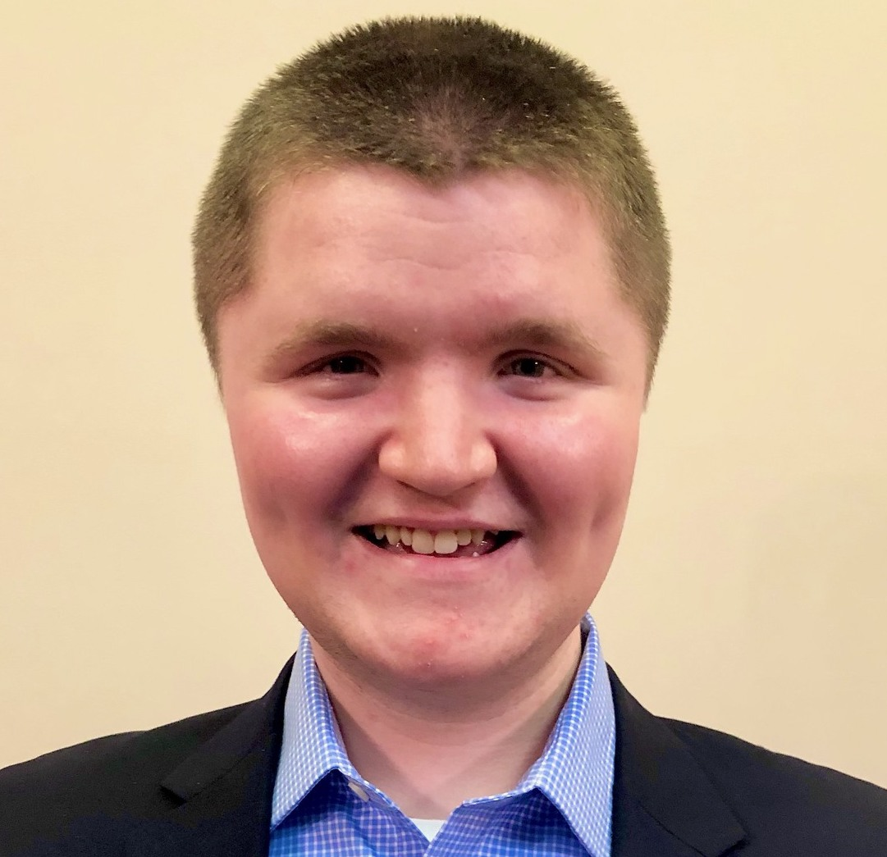
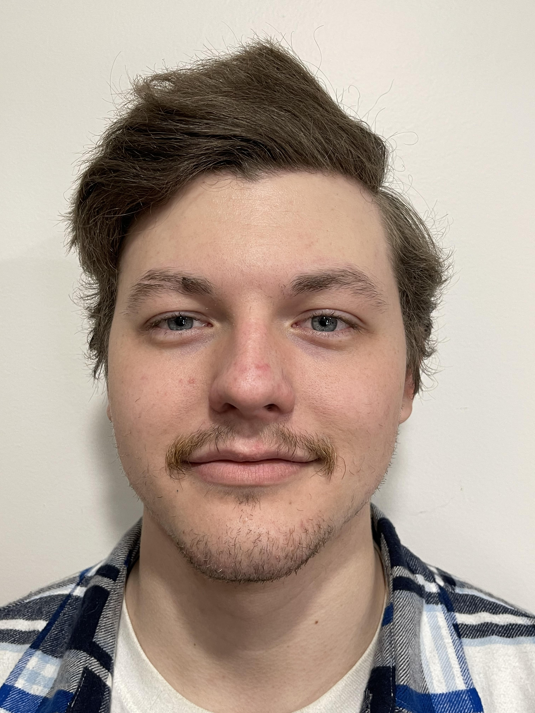
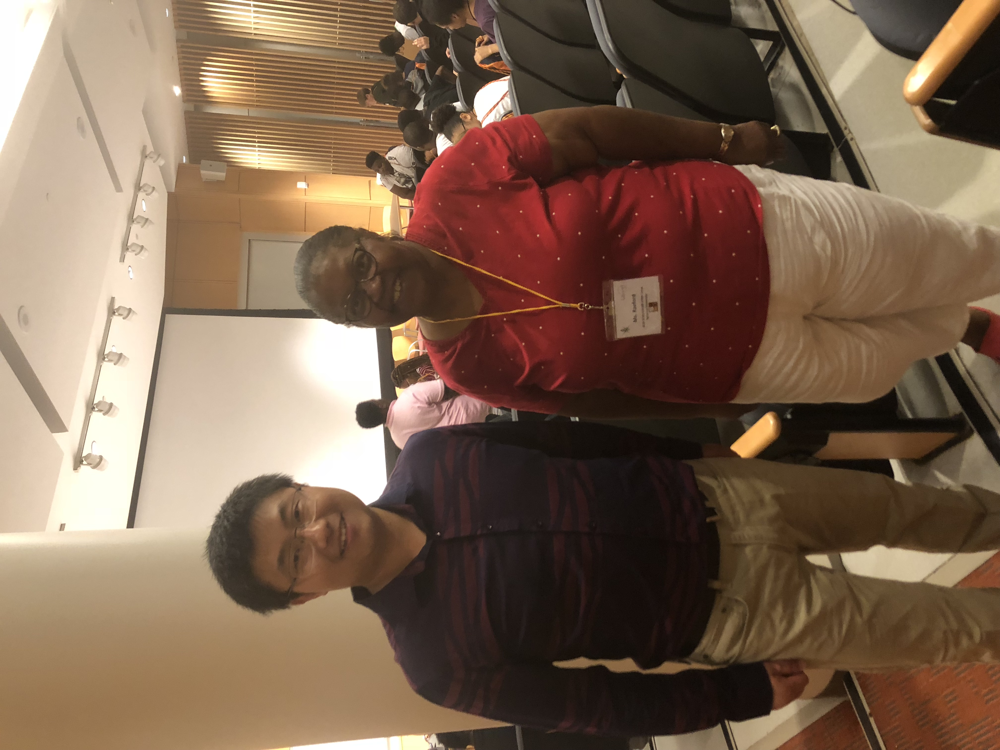

Overview
The mission of our FSSL (FullStack Security Lab) at Syracuse University is to understand and improve the security of emerging web services and off-the-shelf hardware products in novel and deployed application scenarios. Our research method is usually a combination of protocol analysis, program analysis, real-world measurement, cost-effective defense, and other designs that can be put in a large-scale practical use.
Lab location: CST 4-294.
Dr. Tang's office: CST 4-193.
Current Ph.D. Students
 |
 |
 |
|
| Jiaqi Chen | Yibo Wang | Yuxuan Zhou | Wanning Ding |
Current undergraduates (REU)
 |
 |  |
| Eniola Mosaku | Jack Willis | Nicholas P. Sweet |
Alumni
Kai Li (Ph.D. 22) [link]: Tenure-track Assistant Professor at San Diego State Univ., NortonLifeLock fellowship finalist ’22
Qi Zhang (M.Sc.): CertiK
Sencer Burak Somuncuoglu (M.Sc.): Chainalysis
Katchaguy Areekijseree (M.Sc.): PhD at Syracuse Univ.
Hari Krishna Gajarla (M.Sc.): Bloomberg
Vinutha Karanth (M.Sc.): Microsoft
Zhehu Yuan (B.Sc.): Ph.D. at NYU
Qiwu Zou (B.Sc.): Cornell,
Hao Zhou (B.Sc.): Columbia
Congcong Xie (B.Sc.): NYU->Oracle
Adam Piekarski (B.Sc., REU)
Jeong Bin Oh (B.Sc., REU): A database startup
Cheng Xu (Visiting scholar) link: Postdoc at Simon Fraser Univ.
Group pictures
Aug., 2021
 |
Aug., 2020
 |
Jan., 2020
 |
Oct., 2019 (Dr. Yue Duan's visit)
 |
July, 2019 (Summer REU)
 |
Dec., 2018
 |
May, 2018
 |
July, 2017 (Giving a talk for the NSBE Junior Science Camp)
|  |